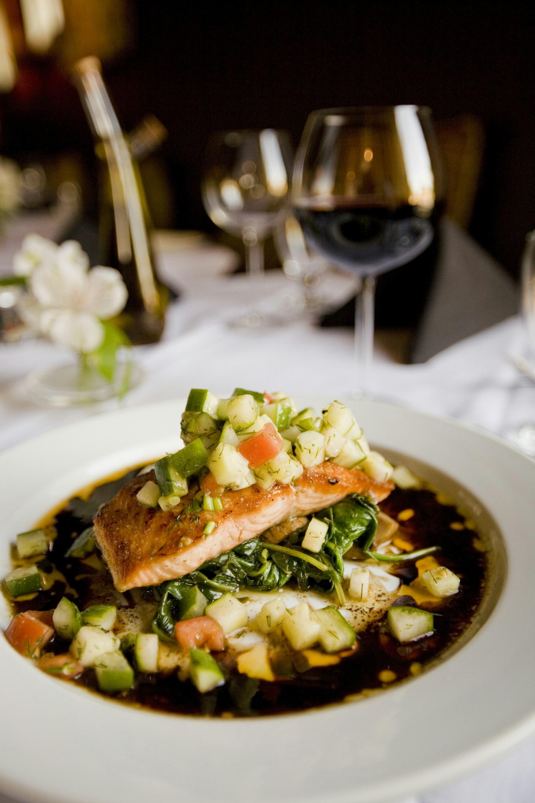

Snacks that keep you full, help you hit your protein target and don't blow your calories. Most need no cooking.

The best high protein low calorie snacks give at least 10 g of protein per 100–150 kcal: think Greek yoghurt, cottage cheese, jerky, edamame, tuna and boiled eggs.
| Snack | Portion | Protein | kcal |
|---|---|---|---|
| Tinned tuna in water | 1 small tin (~100 g) | 25 g | ~115 |
| Cottage cheese | 150 g | ~17 g | ~130 |
| Greek yoghurt 0% | 170 g | 17 g | ~100 |
| Skyr | 150 g | ~16 g | ~95 |
| Beef jerky | 30 g | ~10 g | ~85 |
| Biltong (popular in UK & Australia) | 30 g | ~15 g | ~85 |
| Cooked chicken pieces | 75 g | ~23 g | ~120 |
| Cooked prawns | 100 g | 24 g | ~99 |
| Smoked salmon | 60 g | ~12 g | ~70 |
| Hard-boiled eggs | 2 large | 12.5 g | ~143 |
| Edamame | 1 cup in pods (~155 g) | ~17 g | ~190 |
| Protein shake (water) | 1 scoop | 20–25 g | ~120 |
| Protein pudding / high-protein yoghurt | 1 pot | 15–20 g | ~120–150 |
| Turkey slices | 60 g | ~12 g | ~60 |
| String cheese / cheese stick | 1 stick | ~7 g | ~80 |
| Roasted chickpeas | 30 g | ~6 g | ~120 |
| Lentil or pea crisps | 1 small bag | ~6 g | ~100 |
| Milk / soy milk | 250 ml | 8 g | ~90–120 |
| Tofu cubes, baked | 100 g | ~15 g | ~145 |
| Hummus & carrots | 3 tbsp + carrots | ~4 g | ~120 |
| Peanut butter & apple | 1 tbsp + apple | ~4 g | ~190 |
| Almonds | 20 g | ~4 g | ~115 |
| Pumpkin seeds | 20 g | ~6 g | ~115 |
| Rice cakes + cottage cheese | 2 cakes + 80 g | ~11 g | ~140 |
| Protein bar (check label) | 1 bar | 15–20 g | ~180–220 |
In the US, look for single-serve Greek yoghurt, jerky and cheese sticks. In the UK and Ireland, skyr pots, cooked chicken pieces and biltong are easy to find in meal-deal fridges. In Australia, high-protein yoghurt pots, tuna tins and roasted chickpeas are widely stocked.
For kids, cheese sticks, yoghurt pots, milk, hummus and boiled eggs are simple, whole-food options.
Divide protein by calories: 10 g per 100 kcal or better is excellent.
Many protein bars are 200+ kcal and sugary. Read the label.
Add fruit or veg to protein for even longer fullness.
Pack a snack so the vending machine doesn't decide for you.
A shake or milk is an easy 8–25 g when you have no appetite.
Snap your snack in ProteinSnaps so it counts toward your day.
Tinned tuna, 0% Greek yoghurt, skyr, cottage cheese, jerky or biltong, prawns, turkey slices, boiled eggs and edamame all give 10 g or more of protein for under 200 kcal.
Choose snacks with at least 10 g of protein per 100–150 kcal, such as Greek yoghurt, cottage cheese or jerky, and pair them with fruit or vegetables.
Jerky, biltong, cheese sticks, protein shakes, roasted chickpeas, single-serve yoghurt and boiled eggs travel well.
Some are fine, but many are high in sugar and calories. Check for 15 g+ protein and under about 220 kcal.
ProteinSnaps lets you photograph a meal and get an AI estimate of its protein, calories and macros, plus a simple workout log, so you can see whether you're hitting your number.
Keep reading: How much protein do you need? · Protein calculator · Macro calculator